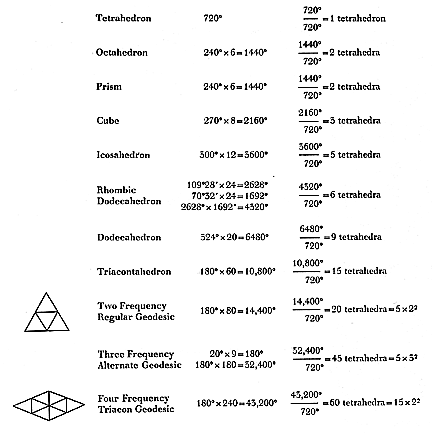

|  |
| Table 224.70A Tetrahedral Mensuration Applied to Well-Known Polyhedra. We discover that the sum of the angles around all vertexes of all solids is evenly divisible by the sum of the angles of a tetrahedron. The volumes of all solids may be expressed in tetrahedra. |